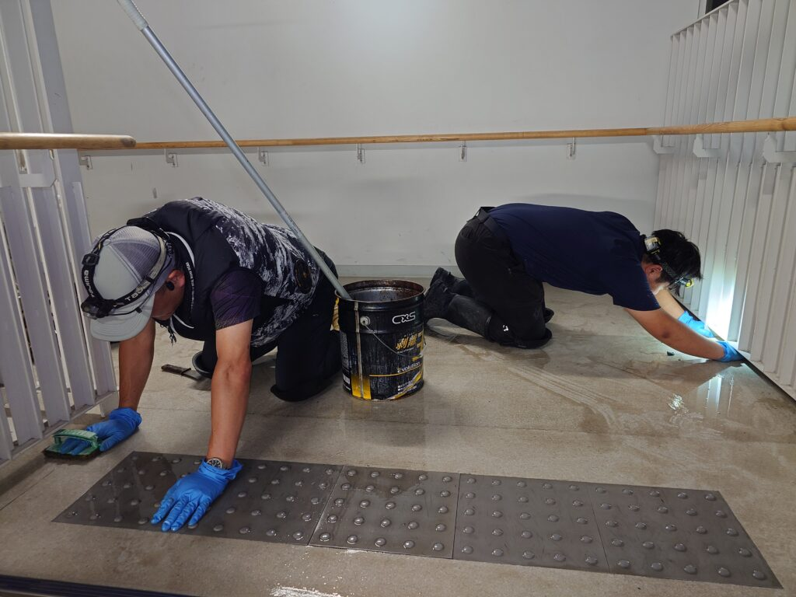
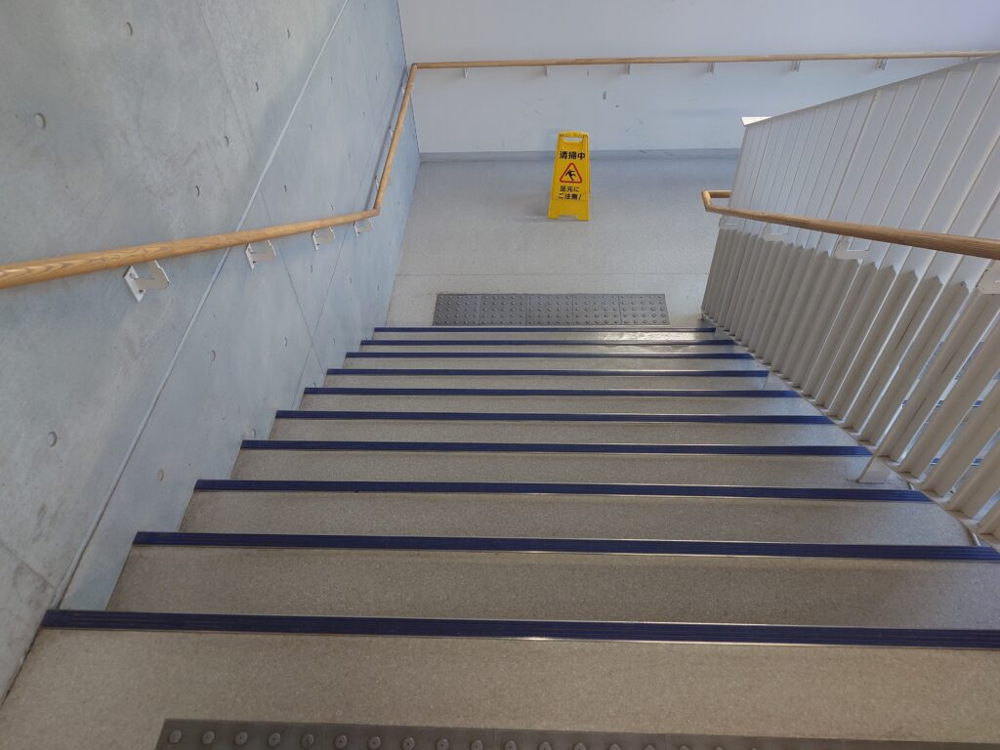
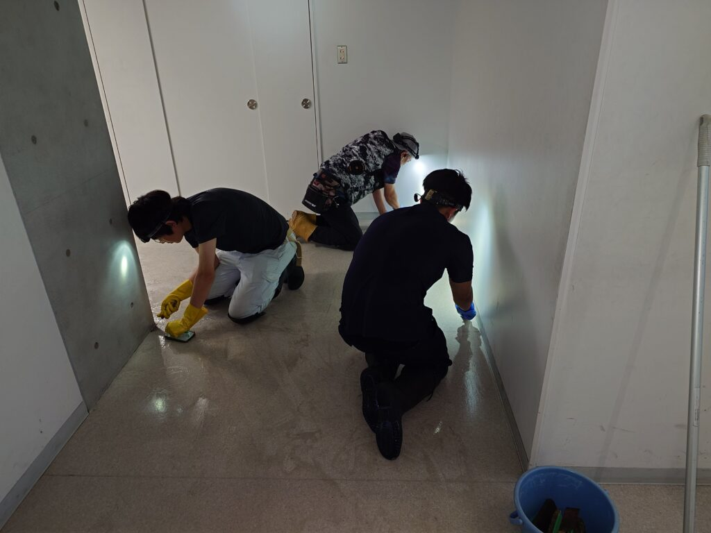
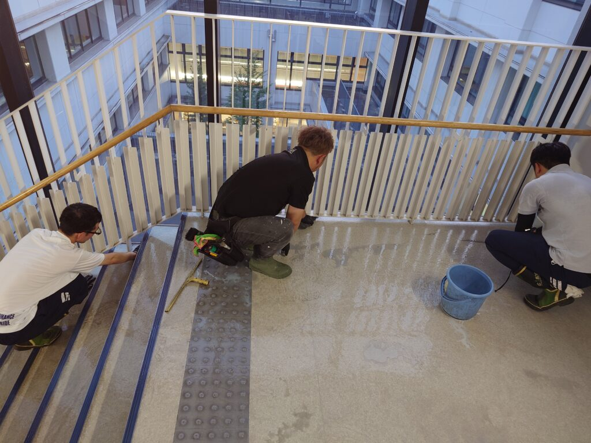
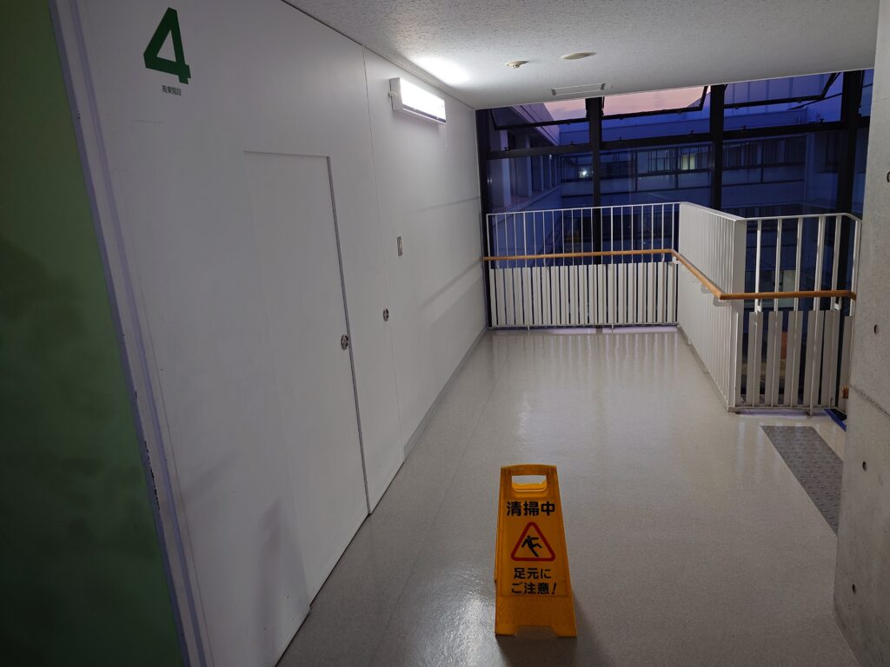

神奈川県某私立中高のフロア階段剥離洗浄クリーニングをしました！
約50万円弱でした！

神奈川の某私立中高様のフロア階段剥離洗浄クリーニングを実施しました！こちらの中高さんはかなりの大きさがある構造建物です。今回、真夏前に生徒さん、先生達が帰られた後に、夜間から明け方にかけて、丸2日間掛けて、DAIZENプロフェッショナルメンバーのべ14人で、フロア階段剥離洗浄クリーニング・WAX仕上げを実施しました！剥離洗浄するとみるみる汚れか浮き出てきました、DAIZENプロフェッショナルメソッドに則り徹底的に隅々まで汚れを除去していきます。丸2日間かけてピカピカの綺麗なフロアと階段が蘇りました！良かったです！



